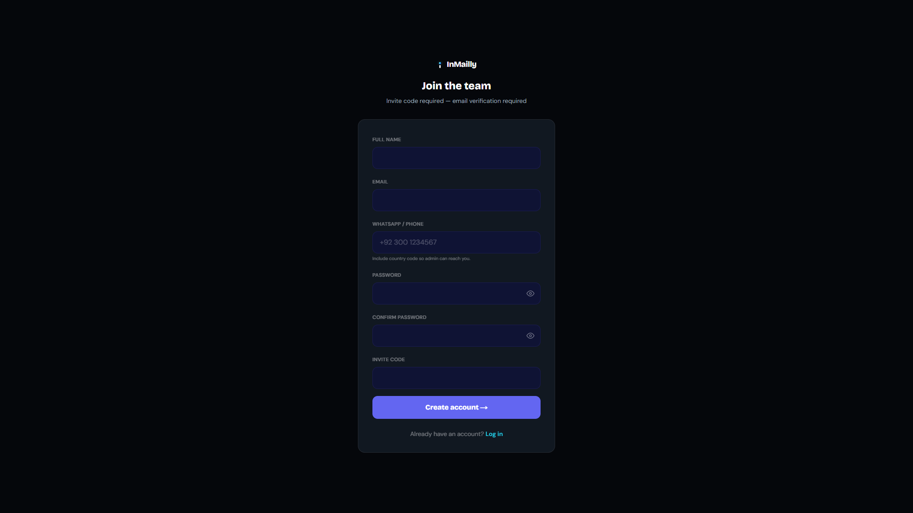

InMailly Team Operating Guide
Step-by-step instructions for login, scripts, Work Links, Intelligence InMail, logging leads, responses, and daily workflow.
www.inmailly.com/team · Updated March 2026
Contents
- Getting started — login & register
- Recommended daily workflow
- Home / Hub dashboard
- Scripts — copy Add Note & InMail
- Work Links — claim, open profile, mark used
- Intelligence InMail (screenshot → AI message)
- My Leads — add & track prospects
- Responses & Reply Assistant
- Team performance board
- Earn & Refer
- Settings & profile photo
- Offer letter & Info Doc (when required)
- Quick FAQ & troubleshooting
1. Getting started
Your team workspace is at www.inmailly.com/team. Bookmark it on your phone and laptop.
New members — register
- Go to
/team/register(you need an invite code from admin). - Fill in full name, email, WhatsApp/phone (with country code, e.g. +92…), password, and invite code.
- Click Create account →
- Check your email and click Verify email & join team.
- Return to
/team/loginand sign in.

Returning members — log in
- Go to
/team/login - Enter email and password → Log in →
- If email not verified, use Resend verification email below the form.

2. Recommended daily workflow
3. Home / Hub (/team/hub)
After login you land on Welcome back, {your name}. Use the left sidebar to navigate.
Quick tiles: Scripts · Work Links · My Leads · Responses · Earn & Refer · Team performance
Sidebar menu: Home · Work Links · Scripts · My Leads · Team performance · Responses · Reply Assistant · Earn & Refer · Settings
4. Scripts (/team/scripts)
Copy outreach text before you open Work Links. Tap a script to expand it.
- Open Scripts in the sidebar.
- Tap Add Note (LinkedIn connection note, max 350 chars) or InMail (Sales Navigator, up to 1,900 chars).
- Use Copy on Subject and Message separately.
- Paste into LinkedIn when you run outreach on a Usual link (manual mode).
5. Work Links (/team/links)
This is where you get LinkedIn profile URLs to work on.
Get links from the pool
| Button | What it does | Rules |
|---|---|---|
| Get Usual links | Standard manual outreach with Scripts | Up to 35 links; need fewer than 5 active Usual links first |
| Get Intelligence links | AI writes custom InMail from screenshot | Up to 20 links; must have 0 active Intelligence links before requesting more |
Three tabs
- Available — pool links you can claim
- My active — links assigned to you now
- Used — completed links (history)
Claim a link
- On Available, click Claim link.
- Choose mode:
- ✦ Intelligence (recommended) — AI personalized InMail from profile screenshot
- Usual — open profile and paste Scripts manually
- Click Open profile ↗ to open LinkedIn in a new tab.
Usual link — complete
- Open profile → send Add Note or InMail using Scripts.
- Back on InMailly, click Mark complete.
- Optionally click + Add as lead if they responded or you want to track them.
6. Intelligence InMail (screenshot → AI)
For Intelligence links only. The AI reads the profile from your screenshot and writes a custom subject + InMail body.
- Click Open LinkedIn profile ↗ on the link card.
- On the profile, take a screenshot:
- Windows: Win + Shift + S → crop the profile area
- Mac: Cmd + Shift + 4
- On InMailly, click ✦ Paste screenshot (or Ctrl+V in the modal).
- Click ✦ Generate personalized InMail
- Copy Subject and InMail body → paste into LinkedIn InMail.
- After sending on LinkedIn, click Sent — mark complete.
7. My Leads (/team/leads)
Log everyone who responds or is worth tracking.
Add a new lead
- Open My Leads in the sidebar (or + Add as lead from a Work Link).
- Fill in: First name (required), Last name, LinkedIn URL, Email, Phone.
- Set Response status (New, Contacted, Replied, Interested, etc.).
- Add notes: what they said, next step, meeting time.
- Click Add Lead →
From Work Links (prefilled)
When you click + Add as lead on a link card, the LinkedIn URL is filled automatically. You only add name + status + notes.
Lead statuses
| Status | When to use |
|---|---|
| New | Just added, no reply yet |
| Contacted | You reached out, waiting |
| Replied | They wrote back — shows on Responses page |
| Interested | Positive signal |
| Meeting booked | Use 📅 Book meeting button in lead row |
| Follow Up | Need to chase later |
| Not Interested | Closed — not a fit |
| Deal closed | Check Deal closed in thread when they sign / pay |
Lead thread (conversation log)
- Click 💬 Thread on any lead row.
- Add messages — toggle sender: team (you) or lead (prospect).
- When the lead sends a message, set sender to lead → status auto-updates to Replied.
- When deal wins, check Deal closed — team celebration banner may appear for 24h.
8. Responses & Reply Assistant
Responses (/team/responses)
Shows leads who replied, are interested, or need follow up. Open any card → View thread to continue the conversation.
Reply Assistant (/team/reply-assistant)
AI helps you reply to LinkedIn threads from a screenshot.
- Click + New to create a thread (prospect name + optional company/LinkedIn URL).
- Screenshot the LinkedIn conversation (Win+Shift+S).
- Paste screenshot in Reply Assistant (Ctrl+V).
- Click ✦ Generate reply or 📅 Meeting link reply if sending a booking link.
- Edit the draft if needed → Copy reply → paste on LinkedIn.
- Click ✓ Mark sent (or Mark sent + meeting booked).
9. Team performance (/team/performance)
Leaderboard for the whole team. Your rank is based on links used, leads, deals closed, and referrals.
- Intelligence links score slightly higher than Usual links.
- Deals closed give the biggest score boost.
- Check Your rank at the top and sort the table by Productivity, Used, Leads, or Deals.
10. Earn & Refer (/team/referrals)
- Open Earn & Refer in the sidebar.
- Copy your shareable link or referral code.
- Share with people who might join as outreach workers.
- When they register and convert, you earn (shown in Earnings history).
11. Settings (/team/settings)
- Upload profile photo — circular avatar on leaderboard (prompt appears until you upload).
- WhatsApp / phone — keep updated so admin and team leader can reach you.
- Name and email changes require admin — contact your team leader.
12. Offer letter & Info Doc (when admin requests)
Red/amber banners on Home mean action is required.
Offer letter (/team/contract)
- Read the agreement scroll box.
- Check the confirmation box.
- Sign with your finger/mouse on the signature pad.
- Click Sign & submit agreement.
Info Doc (/team/info-doc)
Upload ID photos, address, emergency contact, education, and employment details when admin sends the request. Click Submit Info Doc when complete.
13. FAQ & troubleshooting
| Problem | Fix |
|---|---|
| Can't log in | Verify email first; use Resend verification. Check you're on /team/login not /campaign/login. |
| No links in pool | Wait for admin to import links, or try again later. Check Available tab count. |
| Can't get more Intelligence links | Finish or release your current Intelligence links first (max 0 active before new batch). |
| AI InMail failed | Retake screenshot — crop profile clearly. Check internet. Tell admin if error persists. |
| Lead not on Responses | Set status to Replied/Interested, or log an inbound message with sender = lead in Thread. |
| Stats look wrong | Make sure you clicked Mark complete after each send. |
Need help? Message your team leader or admin on WhatsApp.
InMailly · Team workspace · www.inmailly.com/team